Просто удивительно, как часто дети получают травмы от совершенно нелепых, легко предотвратимых причин! Падают с пеленального столика, потому что их оставили одних; разбиваются на роликовых коньках, потому что не было ни шлема, ни защитной экипировки; тонут в водоемах, потому что взрослые отпустили их туда одних; и т. д.
И ведь это те же самые родители, которые завалят воспитательницу детского сада жалобами за ссадину на коленке у их малыша, затравят врача за поствакцинальный инфильтрат; те же самые родители, которые оставляют на тумбочке бабушкин клофелин, убивающий ребенка до приезда скорой помощи.
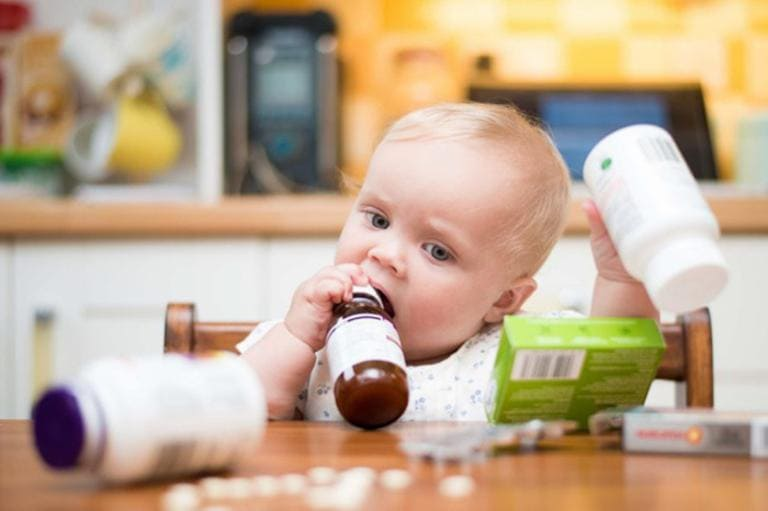
На детских площадках во дворе регулярно можно услышать брань в адрес врачей: родители долго и с упоением обсуждают их ошибки и недочеты, но собственные ошибки, например, когда их ребенок покатился кубарем с лестницы, на которую они поленились поставить заграждение, или когда их ребенок опрокинул на себя ковш кипящей манной каши, потому что он стоял на ближней конфорке и ручка заманчиво торчала наружу, они «тактично» умалчивают. Двойные стандарты налицо.
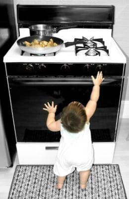
Я живу в Иваново и подписан в твиттере на местные СМИ. Редкая неделя проходит без новостей о бытовом травматизме детей:
✗ ребенок облокотился на москитную сетку и выпал из окна пятого этажа;
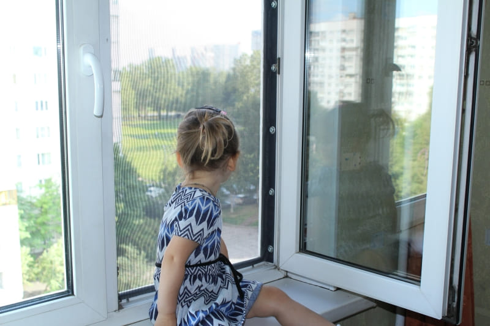
✗ ребенок отравился средством для чистки унитаза;
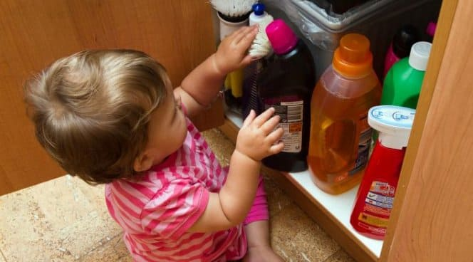
✗ мать оставила девятимесячного ребенка одного в ванне на пять минут, он утонул;
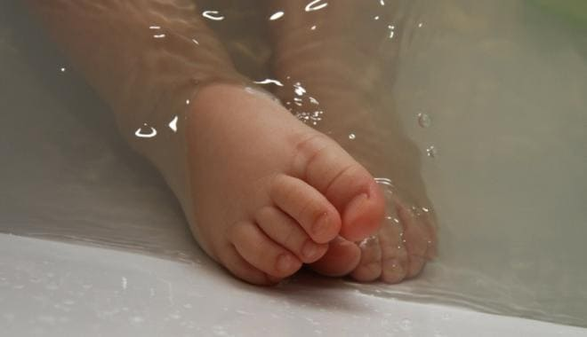
✗ отец опрокинул чайник с кипятком на малолетнего ребенка;
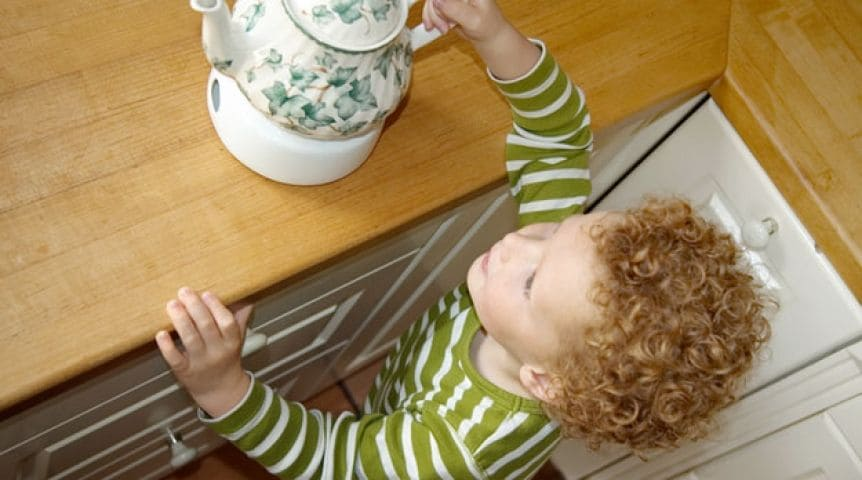
✗ ребенок опрокинул на себя незакрепленный телевизор, и ему раздавило голову;
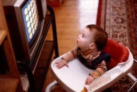
✗ ребенок играл во дворе частного дома, упал в бочку вниз головой и утонул;
✗ и т. д., и т. п. Не говоря уже о регулярных пожарах, ДТП и семейном насилии.
Когда начинаешь говорить с родителями о бытовом травматизме заранее, то часто можно услышать от них (особенно от отцов) фразы про «Как же мы раньше росли, никто за нами не следил!» и «Что, теперь его на привязи держать все детство?!» И это классический пример когнитивного искажения, называемого ошибкой выжившего.
Разумеется, не нужно держать ребенка «на привязи». Разумеется, опасностей гораздо больше, чем мы можем спрогнозировать и предотвратить.
Но не защитить от самых очевидных и смертоносных – это просто преступление.
Поверьте мне, я видел тех же самых родителей уже после травмы или трагедии, и они обычно испытывают тяжелейшую вину за свою небрежность и легкомысленность. Да, от всех опасностей в мире мы детей не убережем, но помните мудрую поговорку: «Делай что должен и будь что будет».
Давайте разберем самые азы, самый базовый перечень бытовых опасностей для ребенка, попробуем их предотвратить, сделать для ребенка в вашем доме безопасную среду.
По мнению экспертов, дети в возрасте от 1 до 4 лет чаще всего погибают от пожаров, ожогов, утоплений, удушья, отравлений или падений. На это и стоить направить наши профилактические мероприятия. Согласно данным Центров по контролю и профилактике заболеваний США, 2,3 миллиона американских детей ежегодно получают травмы и более 2500 детей погибают. Вот почему так важно тщательно делать свой дом безопасным для ребенка.
Чтобы ничего не упустить, чтобы постараться защитить ребенка от самых «популярных» домашних травм, прочтите этот перечень советов и сделайте все то, что еще не сделано.
УСТАНОВИТЕ УСТРОЙСТВА БЕЗОПАСНОСТИ
Начните с посещения магазина с устройствами для защиты детей. Вы удивитесь их огромному разнообразию: это и резиновые накладки, которые крепятся на углы мебели, и блокировщики окон, и «ворота» на лестницы между этажами, и многое другое. Вы можете пригласить к себе в дом мастера по установке этого оборудования или установить его сами.
Имейте в виду, что эти устройства не заменяют ваших глаз и ушей. Некоторые приспособления могут даже навредить, создавая у родителей ложное чувство безопасности и ослабляя бдительность.

ИЗУЧИТЕ ТЕРРИТОРИЮ РЕБЕНКА
Самый эффективный способ обеспечить безопасность вашего ребенка – взглянуть на ваш дом с детского угла зрения. Опуститесь на колени или на живот, проползите по всему дому и посмотрите, как оттуда выглядят вещи.
Что в пределах досягаемости? Что выглядит соблазнительным? Куда бы вы пошли, если бы были ребенком и умели только ползать? Это поможет разобраться, в какие шкафы, ящики и другие места может попасть ваш ребенок. Когда он начнет ходить и бегать, вам придется снова оценить весь дом, теперь учитывая более высокие рост и скорость ребенка.
Надежно заприте или спрячьте все ядовитые вещества, бытовую химию, лекарства, ножи. Чтобы ограничить доступ вашего ребенка в опасные места дома – на лестницу между этажами или в папину мастерскую, – используйте заборчики с воротами.
Следите, чтобы ребенку не были доступны мелкие предметы, которые он может проглотить или даже вдохнуть.
Уберите с пола и нижних полок все монеты, бусы, скрепки для бумаг и другие мелкие предметы. Уберите из зоны досягаемости все целлофановые пакеты – они так заманчиво шуршат, их так интересно надевать на голову, и потому они часто становятся причиной удушья. Уберите все игрушки и взрослые вещи, в которых присутствуют неодимовые магниты, как можно дальше от детей.
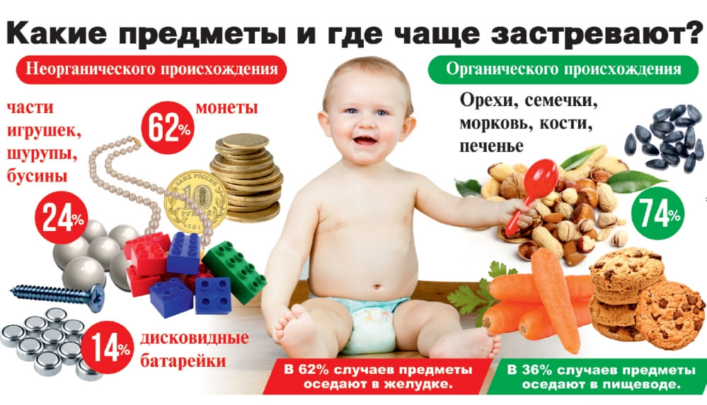
Закрепите неустойчивую мебель, особенно тяжелую бытовую технику на ней. Например, комод: стоит ребенку выдвинуть нижний ящик и наступить на него, как комод рухнет на ребенка всем весом. А если на комоде стоит еще и тяжелый телевизор, он может не только травмировать, но и убить ребенка. И комод, и телевизор следует закрепить к стене с помощью цепочки или стального троса, с расчетом на значительную нагрузку.
Будьте бдительны, когда к вам приходят гости. Независимо от того, насколько тщательно вы защитили свой дом, ваша тетушка вполне может забыть о стандартах безопасности и оставить свою сумочку в прихожей на скамейке. Аспирин, монеты, пакетик, веревочка, острые ножницы или перцовый баллончик быстро могут оказаться в руках вашего малыша.
ЗАБЛОКИРУЙТЕ РОЗЕТКИ
Рекомендуется устанавливать в доме электрические розетки только со встроенной блокировкой отверстий. К сожалению, съемные маленькие вставыши могут легко попасть в рот вашего ребенка, не стоит полагаться на них.
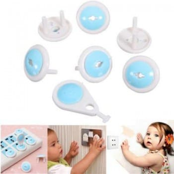
Если вы используете удлинители в своем доме, замотайте все незадействованные розетки на них изолентой. Кроме того, удлинители не должны лежать на полу – за них можете запнуться вы (когда несете ребенка), ребенок может намотать их на шею, а главное – ребенок может помочиться на розетку удлинителя и получить удар электрическим током (моча электропроводна). Не давайте ребенку играть со спицами, гвоздями и другими тонкими металлическими предметами, их слишком удобно засовывать в розетку и щели электроприборов.
Безопасность ребенка в доме – непрерывный процесс. Ворота, которые надежно блокировали доступ ребенка в возрасте одного года, в два года могут стать абсолютно бесполезными.
СОБЛЮДАЙТЕ ОСТОРОЖНОСТЬ ПРИ ИСПОЛЬЗОВАНИИ МЕБЕЛИ И СВЕТИЛЬНИКОВ
По данным Комиссии США по безопасности потребительских товаров, более 16 тысяч детей в возрасте до 5 лет поступали в отделение неотложной помощи в 2006 году с травмами, вызванными падением на них телевизоров, книжных шкафов и другой мебели и техники. В период с 2000 по 2006 год более 130 маленьких детей в США погибли, раздавленные упавшей мебелью или бытовой техникой.
Большие или тяжелые книжные шкафы, комоды и трюмо таят в себе огромную опасность для ребенка, поэтому должны быть обязательно надежно прикреплены к стене. Чтобы сделать мебель более устойчивой и менее тяжелой при падении, всегда кладите более тяжелые предметы на нижние полки и в нижние ящики.
Младенцы пробуют залезать на мебель сразу после того, как обучаются ползанию. Здесь нужно смотреть в оба! Некоторые дети с одного года могут даже поставить стульчик на комод и залезть на него, чтобы добраться до самых верхних полок. Прячьте торшеры за другую мебель, чтобы их основание было недоступно для ребенка.
Держите шкафчики закрытыми, когда не используете, – из ящиков дети быстро делают идеальную лестницу, кроме того, они регулярно прищемляют пальцы.
Острые углы мебели очень опасны, особенно углы кофейных столиков. Наклейте «бамперы» (резиновые накладки) на все углы в доме, они смягчат случайные удары.
УСТАНОВИТЕ ЗАБОРЧИКИ И ВОРОТА
Заграждения внутри дома – одни из самых необходимых приспособлений для организации безопасного быта ребенка. Они позволяют открыть уличную дверь для проветривания, не боясь, что ребенок выйдет на улицу; они удерживают ребенка внутри безопасной комнаты; они предотвращают падение ребенка с лестницы в доме между этажами; они блокируют доступ ребенка к запретным помещениями (например, к ванной или кухне).
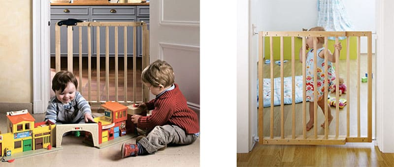
Уберите повыше веревочки управления раздвижными шторами и жалюзи. По американской статистике, шнуры рядом с окнами убивают по одному ребенку в возрасте от 7 месяцев до 10 лет в месяц – дети засовывают в них голову, а затем происходит удушение.
К сожалению, если заграждение изношено или не соответствует возрасту ребенка, оно само может представлять опасность. Поэтому следует подбирать ворота, подходящие по возрасту и росту ребенка; также важно, чтобы вам самим было просто и быстро открывать и закрывать их (в противном случае у вас будет слишком большой соблазн оставить их открытыми, когда вы спешите).
Выбирайте заграждения с фиксированным размером, а не раздвижные (как гармошка), так как V-образные отверстия могут быть опасны ущемлением конечности и удушением.
Оконные жалюзи представляют наибольшую опасность, потому что шея ребенка может попасть не только в шнуры управления, но и в шнуры между планками жалюзи. По возможности используйте бесшнуровые оконные заграждения и не размещайте кроватку ребенка рядом с окном. Если в доме есть занавеси со свисающими шнурами, следует обрезать их так, чтобы они были вне досягаемости ребенка.
УКРЕПИТЕ ОКНА И ДВЕРИ
Всегда открывайте окна только на небольшую щель, в которую не пролезет голова ребенка, и фиксируйте их специальными замками-ограничителями, чтобы ребенок не мог открыть их сам. При этом блокировщики окон не должны быть настолько крепкими, чтобы мешать взрослому человеку быстро открыть окно в экстренной ситуации (например, при пожаре).
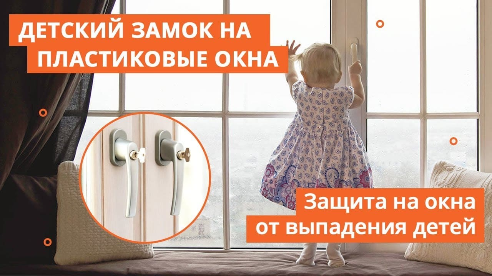
Ежегодно около восьми детей до пяти лет в США погибают от падения из окон и более 3000 получают травмы.
Москитные сетки не только не могут предотвратить падение ребенка из окна, но и сами провоцируют такое падение, создавая у ребенка ложное ощущение безопасной опоры. Держите мебель вдали от окон, чтобы дети не могли по ней забраться на подоконник. Ежегодно тысячи детей выпадают из окон. Не думайте, что с вашим ребенком это точно не случится.
Для предотвращения травм рук в дверных прихлопах во время открывания двери контролируйте, чтобы ребенок не засунул пальцы в прихлоп – дети часто это делают, так как в другое время прихлоп закрыт и недоступен для изучения.
ПРЕДОТВРАТИТЕ ОТРАВЛЕНИЯ
По данным Американской ассоциации центров борьбы с отравлениями, в 2009 году было зарегистрировано более 1,2 миллиона всевозможных отравлений у детей в возрасте до 5 лет. По этой причине погибает около 30 детей ежегодно.
Чтобы защитить свою семью, установите датчик окиси углерода в каждую комнату вашего дома, особенно в спальне. Проверяйте исправность этих датчиков и заменяйте батарейки два раза в год. Если датчик сработает – немедленно распахните все окна и устраните источник угарного газа. Если вы не понимаете, что является источником, немедленно покиньте свой дом и вызовите экстренную пожарную или газовую службу.
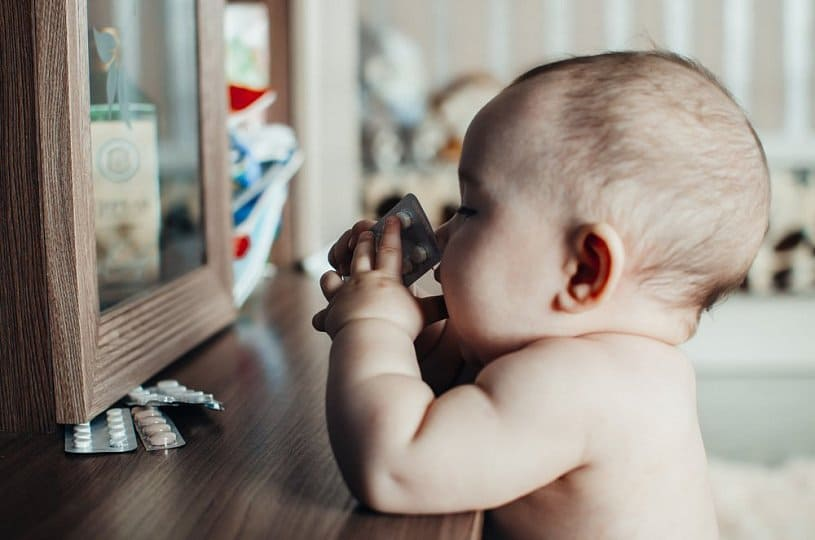
Храните ядовитые препараты вне досягаемости ребенка. Установите замки на всех шкафах и ящиках, в которых хранятся спреи, чистящие средства, лекарства и другие потенциальные яды. Даже некоторые комнатные растения могут быть вредными при попадании внутрь. Своевременно и надежно утилизируйте ненужные лекарства, в том числе с истекшим сроком годности.
Следите за скрытыми ядами. Не все яды легко обнаружить. Окись углерода (угарный газ) представляет собой безвкусный и бесцветный газ, источником которого могут стать неисправные устройства сгорания топлива, например дровяные и угольные печи, газовые колонки и кухонные плиты, камины и т. д. Ни одним органом чувств вы не сможете ощутить превышение предельно допустимой концентрации угарного газа в помещении, но этот газ может убить и вас, и вашего ребенка.
ПРЕДОТВРАТИТЕ УТОПЛЕНИЯ
В США в период с 2005 по 2009 год утонуло более 430 детей в возрасте до 5 лет. Случайное утопление является одной из основных причин смерти детей в возрасте от 1 до 4 лет, и чаще всего оно случается в бассейнах около особняков, в ванной, в бочке или в близлежащем к дому водоеме.
Ванны, туалеты и даже ведра с водой – все это потенциальная опасность. Вот почему важно помнить о «водной безопасности» в вашем доме.
Большинство смертей от утопления в доме связаны с оставлением младенца одного в ванной комнате.
Никогда не оставляйте ребенка без присмотра в ванной, даже если он находится в круге или сиденье для ванны.
Пока ребенок находится в ванной комнате, непрерывно наблюдайте за ним.
Для утопления ребенку достаточно уровня воды в 10 см. Каким бы маловероятным ни казался вам сценарий утопления ребенка в ведре, это вовсе не редкость, поскольку голова маленького ребенка тяжела, легко застревает и тяжело высвобождается при застревании. Ребенок может перевеситься через край ведра, упасть вниз головой, наглотаться воды, запаниковать и не сообразить, как выбраться обратно. А в случае с бочкой в огороде при нырянии в нее вниз головой у ребенка любого возраста и вовсе нет ни одного шанса выбраться наружу самостоятельно, там попросту не от чего оттолкнуться.
Никогда не оставляйте ведро с водой или другую крупную емкость в доступности ребенка без присмотра.
Если вы используете ведро с водой для мытья или других нужд, немедленно вылейте его, когда закончите.
Наконец, проявляйте большую осторожность в отношении бассейнов и гидромассажных ванн. Надувные детские бассейны представляют собой серьезный риск утопления: более 200 детей в Соединенных Штатах Америки утонули в домашних бассейнах за последнее десятилетие. Если у вас есть такой бассейн, опорожняйте его после каждого использования и храните только в вертикальном положении или полностью сдутым/разобранным.
Если у вашего дома есть постоянный бассейн, его нужно обнести забором не ниже 1,2 метра и запирать ворота, ведущие к бассейну, после каждого использования. Не забывайте накрывать крышкой и запирать на ключ гидромассажную ванну.
ПРЕДОТВРАТИТЕ ПОЖАРЫ
По данным Федерального агентства по чрезвычайным ситуациям США, в 2007 году около 2500 детей в США получили ожоги или погибли в результате пожаров на жилых объектах, из них более тысячи в возрасте до 4 лет.
Эксперты считают, что дымовая сигнализация может вдвое сократить шансы гибели в огне. Установите дымовую сигнализацию в каждой комнате своего дома.
Раз в месяц проверяйте работоспособность датчиков, заменяйте батарейки в них как минимум раз в год.
Подумайте о том, чтобы приобрести в дом огнетушитель, и обслуживайте/проверяйте его в соответствии с инструкциями производителя.
Разговаривайте с ребенком об опасностях пожара, как только он сможет вас понимать. Разработайте с ним план эвакуации и регулярно напоминайте, проверяя его знания.
ПОДГОТОВЬТЕСЬ К ЧРЕЗВЫЧАЙНОЙ СИТУАЦИИ
Запишите номера экстренных служб, повесьте их на видном месте, убедитесь, что они забиты в телефоны всех членов семьи и нянечки. Выучите с ребенком ваш адрес, имена родителей и номера их телефонов наизусть, как только это станет возможным. Постоянно повторяйте с ребенком эти номера в виде игры, давайте ему самому набирать и звонить маме или папе.
Убедите ребенка, что его жизнь важнее, чем все вещи в доме, игрушки, документы и домашние животные, вместе взятые. Пусть он будет уверен, что при пожаре ему нужно немедленно покинуть дом, не думая больше ни о чем.
Имейте дома минимальную аптечку с экстренными лекарствами и перевязочным материалом. Берегите своих детей.
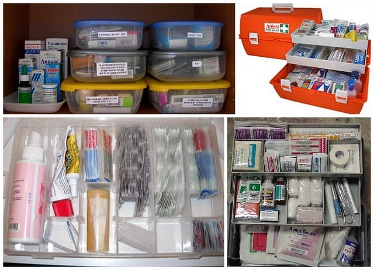
(Сергей Бутрий "Здоровье ребенка: современный подход")